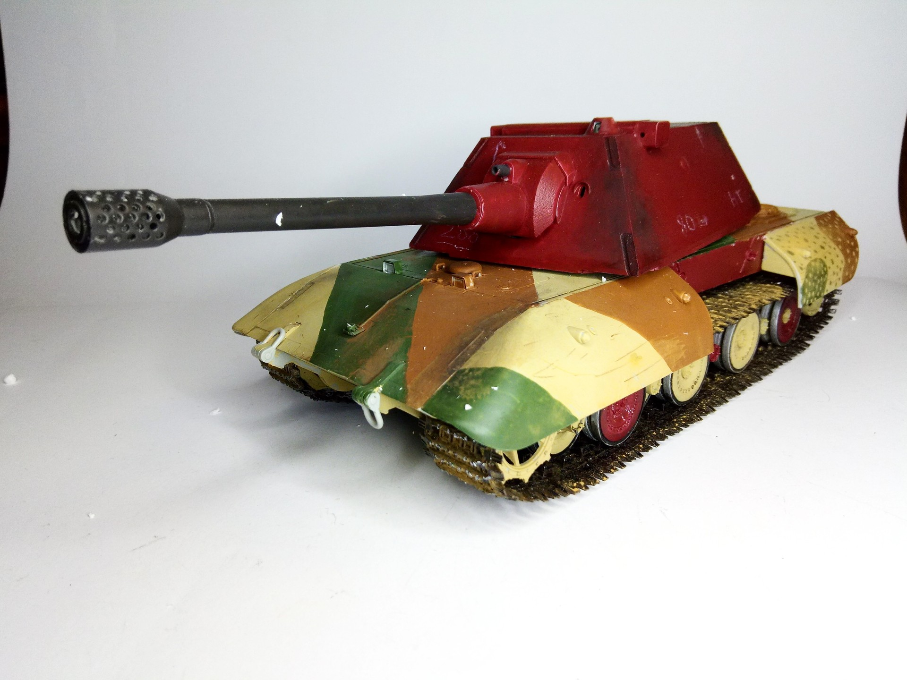
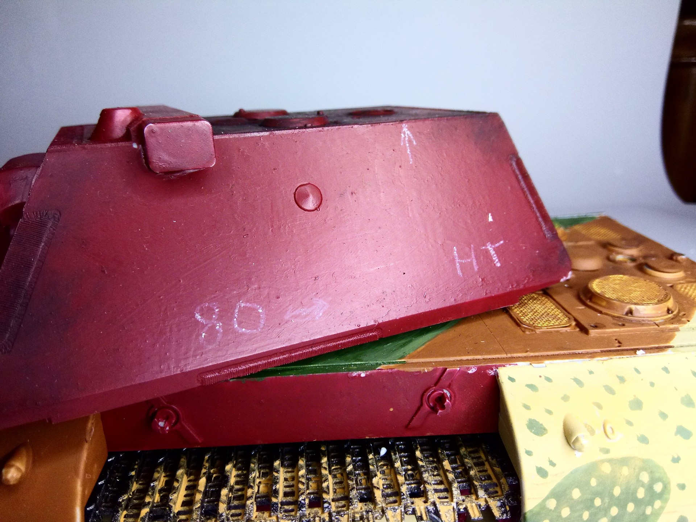
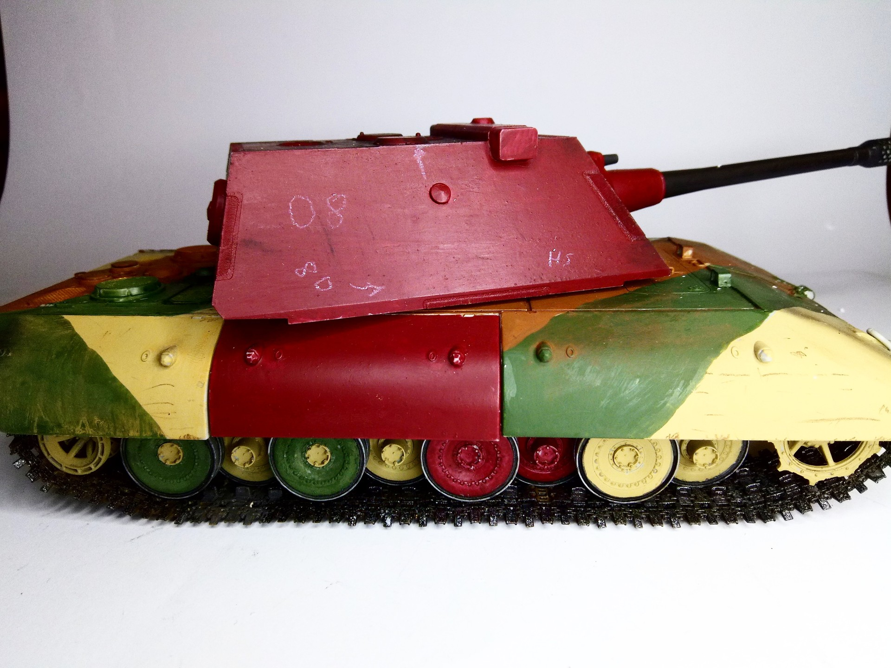
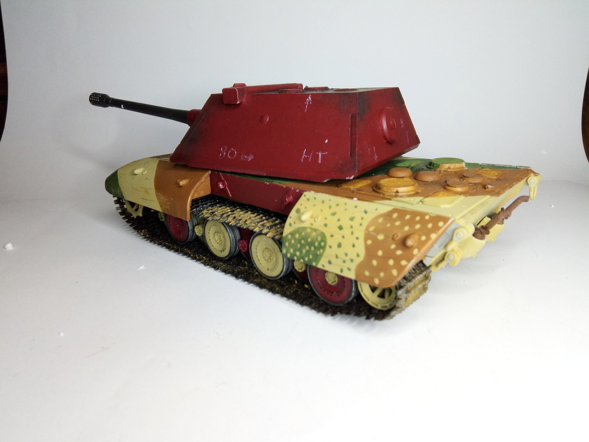

Mezzi militari · scale model archive
E 100 tank
E 100 tank — Kit: Trumpeter, Scale: 1/35. Menacing huge tank, fresh from factory Complete story in: https://tanks-encyclopedia.com/e100-entwicklung-100/…

Photo gallery



English description
Menacing huge tank, fresh from factory
Complete story in: https://tanks-encyclopedia.com/e100-entwicklung-100/
#1/35 #Trumpeter #E100
Descrizione italiana
Enorme carro dall’aspetto minaccioso, appena uscito dalla fabbrica. Storia completa: https://tanks-encyclopedia.com/e100-entwicklung-100/